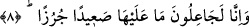
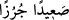

bağlıdır.
Yeryüzü onların güneş gibi doğmasıyla aydınlanmıştır
Gökyüzü Zühre, Güneş ve Müşterî ile aydınlandığı gibi
8. (Bununla beraber) biz mutlaka oradaki her şeyi kupkuru bir toprak yapacağız.
Bununla beraber “Biz mutlaka” bir gün dünyanın ömrü sona erdiğinde “oradaki her
şeyi kupkuru” ot ve başak bulunmayan, yağmur da yağmayan “bir toprak yapacağız.”
Kâşifî der ki: “__WORD__ Saîden curuzen” otsuz sahra ve ova demektir. Yâni sonunda bu
mâmur olan zemîni harâb ederiz. İmdi ona gönül bağlama ki onun sâbit ve bâkî olmayan
ziynetine aldanmış olmayasın.”
Cihan renk ve kokusuyla seni esir eder
Fakat basîret ehli yanında
Ne dünyanın gönül çekici rengine îtibar vardır
Ne de gönül aldatıcı kokusuna dayanak vardır
Büyüklerden birisi şöyle der: “__WORD__ (kupkuru toprak)”, kendisi için pişmanlık ve
zarardan başka bir şey hâsıl olmayan demektir. Kendisini ibâdete veren sâlik, sâdık
tâlib, gerçek anlamda seven, haramıyla helaliyle dünyayı ve ondaki ziynetleri nefsine
haram kılan kişidir. Bunlar insanlara süslenen şeylerdir. Nitekim Allah: “Kadınlardan,
oğullardan, kantarlarca yığılmış altın ve gümüşten (otlağa) salınmış atlardan,
davarlardan ve ekinlerden gelen zevklere aşırı düşkünlük, insanlara süslü (câzip)
gösterildi. Bunlar, sâdece dünya hâyatının geçimidir.” (Âl-i İmrân 3/14)
buyurmuştur. Çünkü Allah’ı sevmek, dünyayı ve şehvetlerini sevmekle, hatta âhireti ve
derecelerini sevmekle bir arada olmaz.
Hikâye edilir ki Hârun Reşid’in on altı yaşında bir oğlu vardı. Dünyadan el etek
çekmiş, aba giymeyi kaftan giymeye tercih etmişti. Bir gün Hârun Reşid’in yanına
uğradı. Etrafında vezirleri vardı. Vezirler:
“Bu çocuk bu hâliyle mü’minlerin emîrini krallar arasında utandırdı.” dediler. Bunun
üzerine Hârun Reşid çocuğu çağırdı ve:
“Oğulcuğum, bu hâlinle beni utandırdın.” dedi.
Çocuk ona cevap vermedi ve yüzünü çevirdi. Duvarın üzerinde duran bir kuş gördü
ve şöyle dedi: